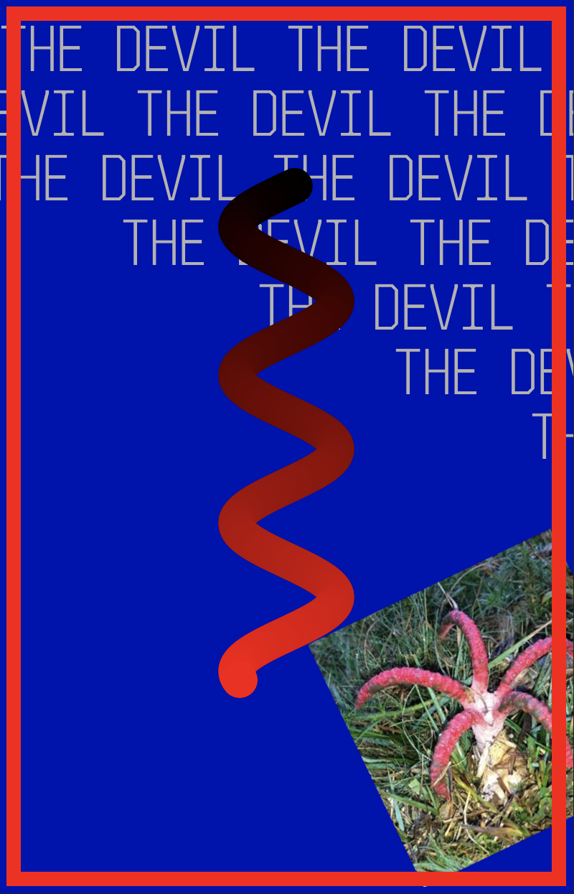
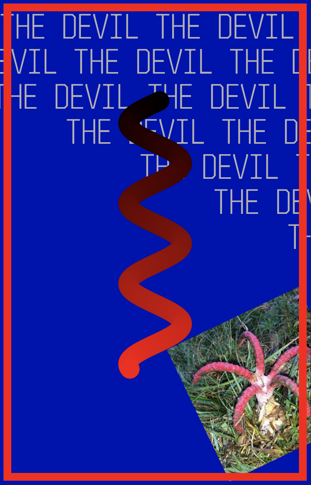
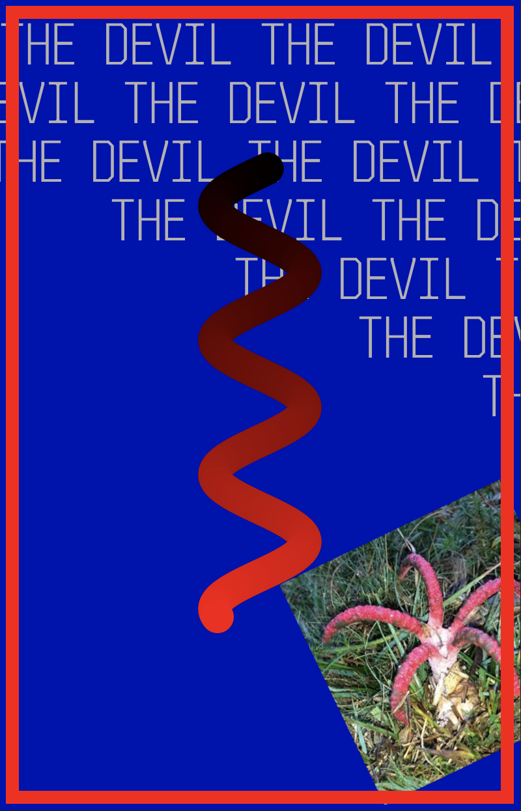

The Devil is in the business of entrapment. It signifies a situation from which there is no escape, or a road leading to one. Forewarning may let you avoid the trap, or it may not. What sort of trap, and how you might avoid it, depends on where the Devil appears in your spread, and what other cards surround it. This card does not foretell doom, only the need for prudence.

Description from trustedtarot.com